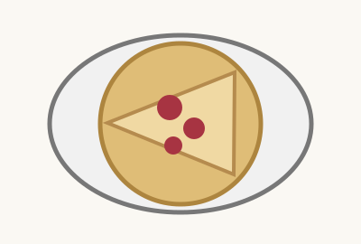

Daphnie Jones - Breakfast Recipes
Crepes

Ingredients
- 1 cup flour
- 2 eggs
- 1 1/2 cups milk
- 1 tablespoon melted butter
- 1 tablespoon sugar
Instructions
- Whisk the ingredients together until smooth.
- Pour a thin layer of batter into a lightly buttered pan.
- Swirl the pan to spread the batter and cook until the edges lift.
- Flip briefly and serve with your favorite toppings.